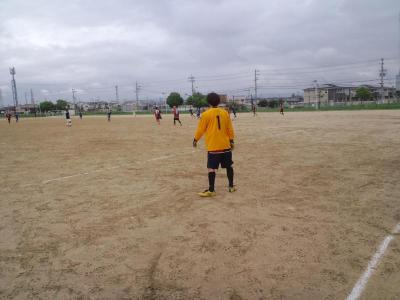

タカさん。
９時３０分ごろ、南森町付近であれば、間違いなく僕です。
がしかし、声をかけて別人であれば、その時はすみません。。。
僕もお見かけしたら、「タカさん！！！」と声をかけます！！
あと、昨日の試合、子供の体調不良（今日の朝に入院しました…）のため、ドタキャン失礼しました。
今回の試合も楽しかったみたいで、参加したかったなぁー
> こんにちは。タカです。
> 昨日、参加されたみなさん、お疲れ様でした。
> 昨日は、失点に絡んだり、試合開始直後に足をやってしまったりと、ご迷惑をお掛けしました。すみません。
>
> 足の方は、ふくらはぎの肉離れでした。
> しばらくお休みすると思いますがみなさん頑張って下さい！
>
> 話は変わりますが、今朝仕事の現場に行くときに、私の目の前をゴリンさんがチャリで通りすぎて行ったのですがゴリンさんだったのかな？
>
> 激似でしたので、ゴリンさんだと思うのですが。
>
> 今度見掛けたら、声かけしてみます！
>
> 別人だったらビックリです。
>
> ということで、また会う日まで、ごきげんよう！
>
こんにちは。タカです。
昨日、参加されたみなさん、お疲れ様でした。
昨日は、失点に絡んだり、試合開始直後に足をやってしまったりと、ご迷惑をお掛けしました。すみません。
足の方は、ふくらはぎの肉離れでした。
しばらくお休みすると思いますがみなさん頑張って下さい！
話は変わりますが、今朝仕事の現場に行くときに、私の目の前をゴリンさんがチャリで通りすぎて行ったのですがゴリンさんだったのかな？
激似でしたので、ゴリンさんだと思うのですが。
今度見掛けたら、声かけしてみます！
別人だったらビックリです。
ということで、また会う日まで、ごきげんよう！

こりゃーテラさん、グランド内に屋根があるところなんか無かったっすよ～ぷんぷん。
ほんと今日は試合もやけど、くそ煩わしい天気で昨日から調整で疲れましたわ。今日も朝から管理事務所に連絡したり、また１１時くらいに確認したり、１２時ころ現地についたら雨が酷くなって中止かもとか考えたりで、結果的には開始時間くらいからは雨は上がってくれて、なんとか試合をすることが出来ました。
本日、お相手頂いたSPARKさん、舞洲人さん悪天候の中、本当にありがとうございました。つたない進行役でご迷惑をお掛けしました。また、今後ともよろしくお願い致します。
今日はギリギリまでどんな感じでしようか迷ってましたが、２チームさんの意見も聞きつつ、余裕プランにしましたが、それで良かったと思います。とにかく地場も重くて疲れましたね。
巴戦で前後半して、最後はミックスチームで楽しくしました。
簡単に試合内容を振り返りたいと思います。
１試合目はうちと舞洲人さんでした。うちはいつもかもだけど、最初の試合は結構押し込まれますね。様子見でバックする予定でしたが、とんでもなく疲れました。
うちもいい形がたまにありましたが、結果的には油断してスルーパスで点を決まられましたね。僕も絡んでいたのでちょっと反省です。
２試合目は、SPARKさんとでした。試合始まって早々に、よっしーが果敢にドリで切り込んで中央からシュート、残念ながら跳ね返されて、その跳ね返ったボールがボランチから上がってたごろうさんの前に、キーパーも誰もいない・・ナイスごろうさん、みんな思った後、ボールはホームラン（涙）、先週のミニゲの結末とおなじやないかーい（笑）
でもごろうさんはいい動きしてたと思います。僕も右サイドから左サイド側から駆け上がってきたごろうさんにいい感じのボールが２本ほどありましたしね。
先制点はSPARKさんでした。コーナーからデフェンスの裏へ出てヘディングシュートお見事でした。あれは仕方ないですね。でも、でも、でも２点目はね・・・、バックスが前線にボールを送って一安心、ごろうさんとヤスさんが同時に靴ひも治して、その間に奪われて、2人が結んでいる間に、反対側にパス出されて、あっけなくシュートを決められました。本日の戦犯はこの２名です（笑）、まあでもヤスさんはそれ以外はもの凄く素晴らしい動きしてましたね。
うちも１点返しました。僕が右サイドでドリで相手を抜いて、ゴール側に切り込んで、ふわっとしたパスを前線へ、個人的にはちょっと蹴りそこね感もありましたが、けいちゃんかよっしーどちらかにと思ったら、走りこんできたよっしーにドンピシャ、ナイストラップをして、そのまま相手を交わしてシュートを決めてくれました。今日もだけど攻撃の起点は楽しいですね。でも結果的にはこの１点だけでしたね。
３試合目は舞洲人さんとの後半でした。わだっちが珍しくトップ下の辺りでプレーしてた感じで、果敢に攻めてましたね。結構いいチャンスもありました。よっしーからのパスをユウちゃんがドリで切れ込んで、キーパーと１対１になりましたが、残念ながらキーパーの好セーブに阻まれました。一進一退でいい感じでしたね。
４試合目はSPARKさんとでした。この試合も一進一退でいい感じでした。ただ始まってすぐにタカさんが足を痛めて交代になったのが心配です。靭帯とかになっていないことを願います。個人的にはグダグダでしたね。シュート１本は打ったけど、相手のデフェンスにやられっぱなしでした。
５本目は混合チームでした。うちはフィールド６名を半分ずつでしましたが、かきさんがいい感じのシュートを打ちましたが、キーパーしてたごろうさんが「ぜってー決めさせない」的な動きでおさえてました。あとはコーナーキックの時に中央付近で居たよっしーが右斜め上に１本指を突き立てて、得点宣言。いざコーナー、よっしーの所には来なかったけど、その後ゴール前の混戦で、味方が打ったシュートがよっしーに直撃して、お邪魔むしに（笑）
よっしーは得点も決めたし、最近かきさんとか以上に掲示板の話題が豊富なので、ぜひ今日のよっしーをお待ちしています。前回得点もSPARKさんでしたね。
あとは、ハマさんがキープしていきなり、審判してた僕を目がけてボール蹴ってきたんで、ジャンプして股の間をボール避けたら、それがスルーパスになってそこから得点シーンに・・・棟梁、おぬしも悪よのう（笑）
まあ、そんな感じの一日でした。参加された皆さん、本当にお疲れ様でした。
ミッフィーお疲れ様～、今日も絶叫がこだましてましたね～。
今日は先週と違ってちょっと少なめでしたが、合計で１２名の参加がありました。少なめといいながら去年の夏はまだ１０超えると参加が多いって感じでしたので、ほんと多くのメンバーに参加してもらって、チームとして存続できているのは嬉しいことです。
天候も暑かったですが、ときおり太陽が雲に隠れたり、涼しい風も吹いていてそこそこやりやすかった感じがしますね。
今日は最初は２人でパス練習、次にポストシュート、センタリングシュートして、ミニゲームの前にちょっと遊びで、PK？フリーキック？みたいなことをしてからミニゲしました。
ポストやセンタリングシュートの時にごりんさんとごろうさんのＧＧコンビのコントみたいなのがおもろかったです。
来週が試合なのでちょっと大きめのスペースでしましたが、正式入部になったおかちゃんがサイドでの運動量が半端なかったっすね。あとはまえちゃんが最初は調子が？？でしたが、最後の方は持ち前のキープ力を発揮してたり、ゴール前でごろうさんのシュートを何度も果敢に止めていたテラさんとのやりとりとかありましたね～。
久々参加のぐっさんやシゲさんとかも良く動いてました。珍しくちょっと動きが鈍かったのがわだっち、理由は３連荘ってようやるわ（笑）
まあ、そんな感じの一日でした。
来週はうち主催の練習試合です、少し遠方で初めての人もおられるとは思いますが、集合時間に遅れないようにお願いしますね。また、現時点で未定や未登録の人で、参加可能な人は早めに参加登録をお願いします。
本日、参加された皆さん、お疲れ様でした。
今日はぐるすけで最初に登録するときに６人以上参加なら実施しますって入れようか迷ったくらい、盆休みだし家庭持っている人は中々参加が難しいやろうなって思ってたんですが、蓋を開けてみれば「な、な、なんと」（ジャパネット風に読んでください（笑））、遅刻、早退、体験参加合わせて１９名って、皆さん家のことは大丈夫でしたか？
まあ、大勢で出来るのはなによりですけどね。ほんといろいろ用事ある中でサッカーに参加してくれるメンバーには感謝です。
練習前にまっさんレンタルショップに注文が入って、ブルーパンツと、サッカーシューズの貸し出しをしました。パンツが１万、シューズが２万ですので、後日請求書送りますんで、振込よろしくです。まいどありー（笑）。当の本人は「じぇじぇじぇ」でしたでしょうね。今日参加されていない方は誰か当ててみてください（笑）
今日は変わった練習メニューをして、最後は大きめのコートでミニゲで締めました。
最初はアップを兼ねて、２手に分かれて鳥かごして、次にいつもならポストシュートですが、シュート練習には変わりないですが、ゴールの左右からボールを出して、それを直接シュートするというこぼれ球のシュート練習をしました。まあ、皆さん野球好きな人が多いみたいでホームランが出るわ出るわでしたね。もちろん一番飛距離があったのは、もうわかりますよね（笑）
よっしーとかがいいゴールを決めてましたね。僕も一本ええ感じがあったので良かったです。
日本代表の試合とかで良く「なんで浮かすねん」って良く思いますが、でこぼこがあったとはいえ、おさえて打つのは結構難しいですね。
次は同じ形で今度はゴロじゃなくて、ゴール左右から浮き球を蹴って、それをトラップしたり、場合によっては直接打ったりと、これまた難しかったですね。そんな中、タカさんがモモでトラップして、それを豪快にゴールに蹴りこんだのがかっこよかったっすね。
まあ、ゴールキックとかを受ける時とか、浮き球のトラップの向上は必要ですので、今後もたまにはしたいなって思います。
次はセンタリングシュートですが、これもいつもとは違って、中央から左右にボールを出して、左右からはゴールに向かうようなクロスを上げるような感じにしました。マーカーでオフサイドラインを意識して、実際の試合でもサイドから中央を走りこんでくる味方にアーリークロスを入れることもあるので、個人的にはめっちゃ面白い練習でした。
んで、早目にミニゲをしました。総勢１９人なので、あの場所で取れるギリギリの大きさでしましたが、あの大きさなら１０対１０でも出来そうな感じでしたね。
サイドを使った攻撃も随所に見られたりで、まだ２週間先ですが練習試合に向けていい練習が出来たのかなって思います。
今日は、わだっちとヒロさんのせめぎ合い、恒例のよっしゃんとはまっちの戦いとかがいい感じでしたね。はまっちは得点を良く決めていたと思います。体験参加のおかもっちゃんも豊富な運動量でサイドを駆け上がったりしてました。個人的にはプレイスタイルがプチかぶるかも？ポジション奪われないようにしないと（笑）
良かったら正式入部して、タカさ～んチェックを受けてください（笑）
僕自身としては、逆サイドへ走りこんでいたタカさんへのドンピシャなボールが一番良かったかな、あとはまっとんへのスクリーン股抜きアシスト（笑）
まあ、何だかんだで最後は２０分近くしてましたが、今日は天気もいい感じで全体的に体力が残ってたかもしれませんね。
全体的に久々参加のごろうさんの絶叫が枚方大橋のほうまでこだましてました（笑）
そんな感じの一日でした。参加された皆さんお疲れ様でした。
日本代表、弱いね～。いきなり先制点取られてるし。
今日も暑かったですが、時折太陽が雲に隠れたり、涼しい風が吹いたりで先週よりは少しましだったですね。今の季節は多くの水分補給はもちろんですが、きちんと体調管理して参加してくださいね。
今日はそんな中、遅刻、早退の方を含めて１４名の参加がありました。
まずは鳥かごでアップして、次にシュート練習しましたが、普通のポストシュートとちょっと違って、ポストがボールを受けて振り向いて、前に置いたコーンをかわしてシュートもしくは一度後ろに戻して、裏に走りこむみたいな感じでしました。
そのままの流れでワンツーでシュート練習もしました。
次に３ON３で攻めと守りをしましたが、試合中でも３対３になる場面も多いので、試合でも活かせたらいいなって思います。
その後は、早退の方も居たのでプチ早目にミニゲをしました。いつもよりはコートを広く取って、休憩も多めに取ってしました。
うーん、印象に残っているのはわっちの「平行」とかきさんの蹴りそこないループオウンゴールくらいっすかね。
最後の１本はあっついなか、ちょっと長めと言ってたら結局２０分くらいしてましたね。最後は結構疲れましたね。
まあ、そんな感じの一日でした。参加された皆さん、お疲れ様でした。
あちち、あち、燃えているんだろうかあ～。ほんと郷ひろみの歌状態のくそ暑い天気の中、遅刻早退、体験参加者含めて、最大で１２名のサッカー馬鹿の参加がありました。（笑）
癒しの一本木が救いの一本木になってくれてますね。
きっと参加された皆さんは今頃、風呂入ったりした後にぷはーと冷たいビールとか飲んで冷房で涼んでいることでしょう。
今日は最初は１０名だったですが、全員でボール二個で鳥かごをしました。その段階で結構ふらふらになりましたね。
次にポストシュートしましたが、普段と違ってポストへ強めのボールを蹴って、そのままパス＆ゴーみたいにして、ポストは受けたボールを横でなく、斜め前に返す感じで、最初のボールが緩いと、シュートが難しいという感じでしたが、そんな中でも結構いいシュートをダイレクトで何本か決まってましたね。
次は左右からセンタリングシュートでした。タカさんやったかな？直接ダイレクトボレーがいい感じでしたね。ほかにもヘディングシュートとかも決まってました。
次に攻めと守りを少ししてから、ミニゲをしました。ミニゲはまあめちゃハイライトは無かったですが、味方のはずのヒロさんから僕が痛恨の一撃を二発くらったのと、ゴールにボールじゃなくて、ヒロさんが代わりに突っ込んだことや、テラさんの珍プレーが目立ったかもですね。ほんとたまに吹く風が心地よかったです。休憩も多めに取りましたが、今日はまじ暑さにみんなタジタジでしたね。
まあ、怪我とか無くて終われて何よりでした。
本日参加された皆さん、お疲れ様でした。
そういえば。帰りに車で入ってたら堤防で花笠や民族衣装を着た女性グループ２０名くらいがなんか練習してましたが、あの天気であの恰好じゃ拷問ちゃうんって勝手に思ってました（笑）
先日の試合参加された方、お疲れ様でした。
ゲームパンツを忘れてしまい急遽レンタルショップまっさんで青のゲームパンツを借してもらったのでプレーよりもパンツが目立ってしまいましたが相手チームのクロちゃんのインパクトには負けてたと思います。自身の内容ですが散々良いパスをもらいながら決めきれなかったですが、最後に前ちゃんから絶妙なスルーパスを送ってもらい何とか決める事が出来ました。ありがとうございました。早退組みのスガちゃんと共に最後仕事が出来て良かったです。まっさんパンツ本当にありがとうございました。助かりました。
完全なごっつぁんゴールでした。前線までのみなさんの頑張り、ヨッシーの切れ込みからのいいシュート！
押し込むだけの恵まれた初得点でした！
ありがとうございましたぁ
今日はまさに真夏でしたねー。
一番若いのに一番バテるのが早いのはいつも通りでした。
今日は良い感じのゴールが決めれて最高でした！
ボランチ兼サイドハーフの如く、ガツガツプレス&ドリで攻略してくれたわだっち、前ちゃんが幾度もチャンスを作ってくれたのが印象的でした。
まっさんのクロス、よっしーのロングフィード、まっとんさんとのワンツーなど、良い形ながらもゴールに至れなかったのは悔しかったですが、次は決めますね(笑)
今日は早退の条件が得点する事だったので、
意地の猛牛ドリで得点し、早退させてもらいました。
早退組テラさんと共に必死のパッチでした(笑)
チームのコンビネーションが着実に上がってきているので、試合がますます楽しみです。
まだまだ暑い日が続きますが、
体調に気をつけてサッカーを楽しみましょう！